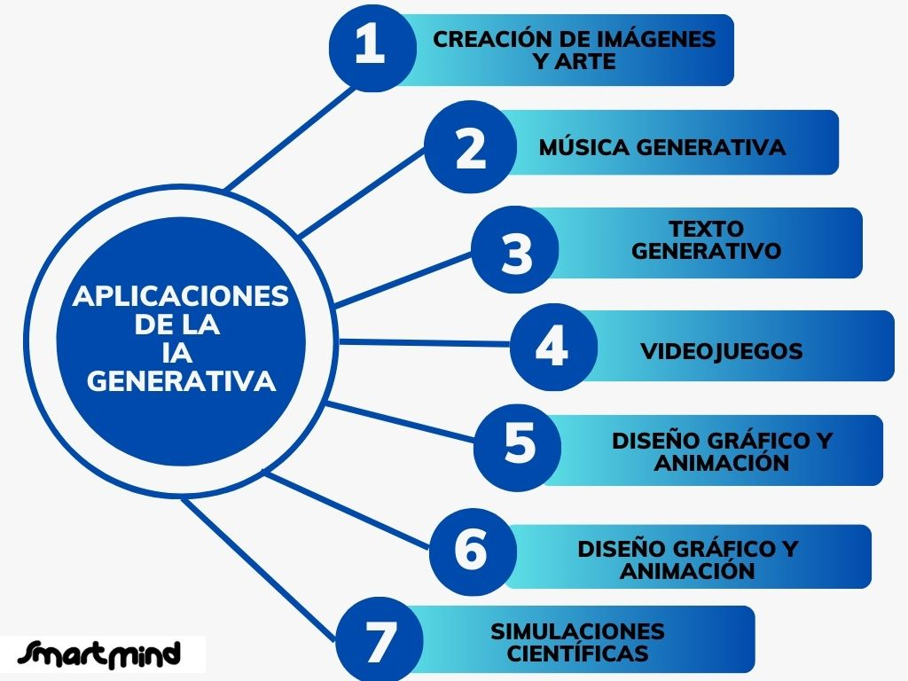
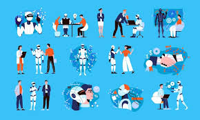

Aplicaciones de la Inteligencia Artificial

- Introducción
- La ia en la vida cotidiana
- Aplicacines en la medicina
- La ia en la educacion y el trabajo
- Aplicaciones en la industria y el transporte
- Riesgos y desafios de la ia
Introducción
La inteligencia artificial se ha convertido en una de las tecnologías más importantes y utilizadas en la actualidad. Gracias a su capacidad para analizar información, aprender de los datos y tomar decisiones, la IA está presente en muchos aspectos de nuestra vida cotidiana. Aunque a veces no somos conscientes de ello, utilizamos sistemas de inteligencia artificial constantemente, ya sea al usar el teléfono móvil, navegar por internet o interactuar con aplicaciones digitales.
En los últimos años, su desarrollo ha avanzado muy rápidamente y cada vez se aplica en más sectores, como la medicina, la educación, la industria o el transporte. Por esta razón, muchos expertos consideran que la inteligencia artificial tendrá un papel fundamental en el futuro de la sociedad.
La IA en la vida cotidiana
Actualmente, muchas aplicaciones y dispositivos utilizan inteligencia artificial para facilitar tareas diarias y mejorar la experiencia de los usuarios. Un ejemplo muy conocido son los asistentes virtuales como Siri o Alexa, que son capaces de reconocer la voz humana y responder preguntas, poner música, buscar información o programar recordatorios.
Además, plataformas digitales como Netflix, YouTube o Spotify utilizan algoritmos de inteligencia artificial para recomendar películas, vídeos o canciones según los gustos e intereses de cada usuario.
La IA también está presente en traductores automáticos, aplicaciones de mapas, redes sociales y sistemas de reconocimiento facial utilizados para desbloquear teléfonos móviles o mejorar la seguridad.

Aplicaciones en la medicina
Uno de los campos donde la inteligencia artificial está teniendo mayor impacto es la medicina. Los sistemas de IA pueden analizar enormes cantidades de datos médicos en muy poco tiempo, lo que ayuda a detectar enfermedades de forma más rápida y precisa.
Por ejemplo, algunas inteligencias artificiales son capaces de identificar tumores o anomalías en radiografías y escáneres médicos. Además, también se utilizan para desarrollar nuevos medicamentos y crear tratamientos personalizados adaptados a las necesidades de cada paciente.
En algunos hospitales, incluso se emplean robots y sistemas inteligentes que ayudan durante operaciones quirúrgicas, aumentando la precisión y reduciendo riesgos.
Usos importantes en medicina
Detección temprana de enfermedades.
Análisis de radiografías y pruebas médicas.
Desarrollo de nuevos medicamentos.
Robots utilizados en cirugías.
Mejora de tratamientos personalizados.
 volver al indice
volver al indice
La IA en la educación y el trabajo
La inteligencia artificial también está transformando la forma de estudiar y trabajar. Actualmente existen herramientas capaces de resumir textos, traducir idiomas, resolver dudas o generar contenidos automáticamente. Estas aplicaciones ayudan a los estudiantes a aprender de manera más rápida y facilitan muchas tareas académicas.
En el mundo laboral, muchas empresas utilizan IA para automatizar trabajos repetitivos, organizar datos o mejorar la atención al cliente mediante chatbots capaces de responder preguntas de manera automática.
Sin embargo, el avance de la inteligencia artificial también ha generado preocupación porque algunos empleos podrían desaparecer o cambiar mucho en el futuro debido a la automatización.
Aplicaciones en la industria y el transporte
En la industria, la inteligencia artificial se utiliza para controlar robots y máquinas capaces de trabajar de forma rápida, precisa y continua. Gracias a ello, las fábricas han conseguido mejorar la producción y reducir errores.
En el transporte, algunas empresas están desarrollando vehículos autónomos capaces de circular sin conductor. Estos vehículos utilizan cámaras, sensores e inteligencia artificial para analizar el entorno y tomar decisiones en tiempo real.
Empresas como Tesla trabajan actualmente en este tipo de tecnologías, que podrían cambiar la forma de desplazarse en el futuro.
Riesgos y desafíos de la IA
Aunque la inteligencia artificial ofrece muchas ventajas, también plantea algunos problemas importantes. Uno de los principales riesgos es la pérdida de privacidad, ya que muchos sistemas recopilan grandes cantidades de información personal de los usuarios.
Además, también existe preocupación por el uso de la IA para crear noticias falsas, manipular imágenes o difundir información engañosa en internet. Otro de los debates más importantes está relacionado con la posible sustitución de trabajadores humanos en algunos sectores laborales.
Por esta razón, muchos expertos consideran necesario establecer normas y límites para garantizar un uso responsable y ético de la inteligencia artificial.